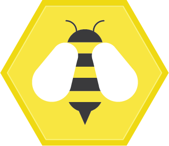
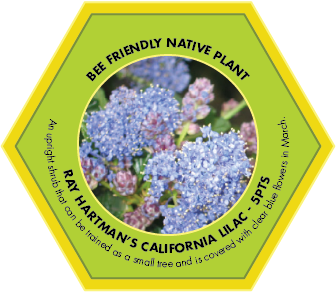
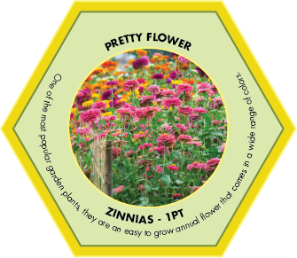

We worked with honeybee colony data and researched the impact of and factors affecting healthy bee populations. This data shows us that there have been some significant decreases in total bee health across the US at various times over the past years and that some factors, such as colony collapse disorder are not very well understood. We also saw that different states have different honeybee stories, since each state will have differing amounts of beekeepers, honeybee colonies, different climates, and different histories of beekeeping. While environmental factors affecting bees are not completely understood, there are many clear actions we can take to help honeybees and wild bees, including planting bee-friendly plants in home gardens, avoiding chemical pesticides, and supporting legislation that protects the environment.
GameOverview
We decided to create a game that would be distributed by a national bee advocacy group as a thank you for donating and aimed at getting home gardeners engaged in the topic. We took on the persona of the Bee Informed Partnership, a real organization that works with beekeepers and provides educational resources and information to the public.
Data
We took a quick look at the raw honeybee colony data from the USDA Agricultural Statistics Datasets and saw a lot of variation in the amount of bee colonies per state over the past years, including significant decreases. Further research told us that honeybee and wild bee health is a real environmental problem. We ultimately decided to use our research to inform the game design and goals rather than being the content of the game.
Game Design
The basic gameplay involves building a “landscape” by setting down flower cards and beehive tokens according to rules that convey the beneficial interdependence between flower and bees. See the gameplay pdf attached to the end of this post for full details.

Example card back and picture of a beehive token


Example flower cards
Our flower cards have 3 possible point values: 5 points for bee-friendly native plants, 3 points for bee-friendly non-native plants, and 1 point for flowers that do not benefit bees. We decided to make the cards relatively simple with the focus on the flower photo. Each card has a short description, with more details that a home gardener might be interested in included in a mini flower factbook that comes with the game.
Example event cards
Our event cards represent relevant real-life events that could affect bee or flower health.
Example set up scenario
When the game is set up, players are assigned roles. A randomly chosen US state card that determines the starting resources available, with the starting number of beehives proportional to the actual number of beekeepers in each state, and the starting number of flowers proportional to the area of the state. For example, California is one of the biggest states in terms of area and number of beekeepers active in the state, so we gave it larger starting numbers.
Example round
Over the course of the game, players will place down flower cards, beehive tokens, and deal with occasional event cards. Flowers must be placed down no more than 2 spaces away from a beehive, and beehives must be placed near a sufficient amount of bee-friendly plants. The game is played for collective points totaled at the end. These two game design decisions encourage players to work together and emphasize that as citizens who care about the environment, we all need to work together to support bee health. We also decided not to impose boundaries with a physical game board to make the landscape feel more flexible and organic.
In developing this game, we tried to balance conveying our message and making the game fun to play!
Environmental impact of honeybees: https://www.npr.org/sections/thesalt/2018/01/27/581007165/honeybees-help-farmers-but-they-dont-help-the-environment
How to help bees: https://www.nrdc.org/stories/buzz-about-colony-collapse-disorderhttps://www.enr.gov.nt.ca/en/services/insects-and-spiders/bees
6 thoughts on “Buzzy Gardens”
I really liked the approach of the game. The game is super simple to think about, and it can help donators better understand the impact they are having.
One drawback I feel here is that, maybe there was not enough “hardship” in the game. Like, I am not sure whether the game was hard enough in such a way that it could help one really understand what kind of challenges are bees facing or beekeepers are facing. I also wished there was a bit more of the data incorporated in the game (but a disclaimer here is that I didn’t look at this data thoroughly so I am not actually sure what is & isn’t there to talk about).
The game seems really well done and put together. Bravo on the art and thought put into it. I feel like this could easily be a normal board game instead of one purely thought to teach people about bees. It seems there would be a lot of repeatability and variability due to the starting scenarios and finding ways to maximize the point total at the end.
While this game matches its audience (donors and home gardeners), I think it would have been interesting to hear about a plan to sell this game normally. It may not be the most wide-reaching game, but I feel like it could be sold in stores, which would also help get others interested in the cause. With that approach, I think there could be more specific messaging or details included with or shown in the game so people could learn more about the topic if wanted.
I really like the overall idea, especially using the game perspective to inform people. I particularly liked the game rules PDF which looks just like a boardgame handbook and the overall esthetique. I believe though there might have been more exploration in terms of how the mechanics of donation/distribution of the game.
If the game is distributed to people who have already donated, they might not be the best audience for this game, since, having already donated, they probably already are aware of the importance of bees. Maybe, a different mechanic could have been that the game is distributed for free in kiosks, and the costs would be recouped by the following donations through a call to action after the game.
Feedback
This is a great first pass at a game with playful participation based on the observations you made of the data; and I’m sure would need more rule-iteration based on play-testing.
Centrality of participation:
The entire invitation is a game, which of course is very participatory. Each round requires decision making based on a model of the real-world affordances and constraints.
Rationale for design choices:
The playful design connects well with the context you’ve set up. The design of the gameplay seems good at first pass – of course it would take playing it to suss out how the rules function.
Layers of reading:
Some of this comes through with the regional constraints – ie. how many hives CA needs and such.
Appropriate data use:
You’ve worked the data representation here in reasonable ways – the event cards, the region cards, etc. Your idea of segmenting the types of flowers is a good way to model some of the information about ecosystem and pollinator-friendly plants. I assume the event-cards, and the amount of each, is based on some of your data analysis. Having the data inform the game design is fine; not all data stories present the data directly – sometimes they represent the story in the data.
Suitability for audience:
You’ve narrowed down nicely with your choice of who you are, and a clever idea of rewarding the donators with this game. If I donated, I’d try the game out.
Narrative:
Your promo video is a nice example of embracing this presentation format to fit into your story. The components come together to tell a story about how bee hives can be healthy, and how the ecosystems around them can support them. It is hard to tell without playing the game, but I get the sense that the a “happy and healthy” goal comes through well.
Call to Action:
This is kind of funny because one action has already been taken – donating. The idea of regional expansion packs to raise money is quite clever. And you’ve got the social sharing invitation at the end as well. The suggestion here is that playing the game educates the participants more, and the design decisions seem well aligned around that.
Hi! Thank you for sharing your project. One thing I really appreciated was the clean and eye-catching design. The game cards look fun and appealing and make me want to learn more. I also think the open layout of the game is a very neat creative feature that is a suitable to an educational game because it allows the player to determine their own path through the game.
One suggestion I might have is that it might be interesting for you to explore more game elements that are purely for fun rather than tied to the data/learnings. I think the game gives an accurate depiction of issues that might affect bees, but I also think I would be more inclined to play the game if it had more fun language or more exciting/unexpected twists.
The aesthetic and concept of the game is great – reminded me of Catan and can imagine it being played.
The main risk here is around clarity of message. While the game appears educational and based on state-specific information (which is great) it is not clear to me what the narrative is and what data it aims to highlight. Players may walk away with more information on bee livelihoods but not clear that they’ll walk away with a particular message/sense of call to action


I really liked the approach of the game. The game is super simple to think about, and it can help donators better understand the impact they are having.
One drawback I feel here is that, maybe there was not enough “hardship” in the game. Like, I am not sure whether the game was hard enough in such a way that it could help one really understand what kind of challenges are bees facing or beekeepers are facing. I also wished there was a bit more of the data incorporated in the game (but a disclaimer here is that I didn’t look at this data thoroughly so I am not actually sure what is & isn’t there to talk about).
The game seems really well done and put together. Bravo on the art and thought put into it. I feel like this could easily be a normal board game instead of one purely thought to teach people about bees. It seems there would be a lot of repeatability and variability due to the starting scenarios and finding ways to maximize the point total at the end.
While this game matches its audience (donors and home gardeners), I think it would have been interesting to hear about a plan to sell this game normally. It may not be the most wide-reaching game, but I feel like it could be sold in stores, which would also help get others interested in the cause. With that approach, I think there could be more specific messaging or details included with or shown in the game so people could learn more about the topic if wanted.
I really like the overall idea, especially using the game perspective to inform people. I particularly liked the game rules PDF which looks just like a boardgame handbook and the overall esthetique. I believe though there might have been more exploration in terms of how the mechanics of donation/distribution of the game.
If the game is distributed to people who have already donated, they might not be the best audience for this game, since, having already donated, they probably already are aware of the importance of bees. Maybe, a different mechanic could have been that the game is distributed for free in kiosks, and the costs would be recouped by the following donations through a call to action after the game.
Feedback
This is a great first pass at a game with playful participation based on the observations you made of the data; and I’m sure would need more rule-iteration based on play-testing.
Centrality of participation:
The entire invitation is a game, which of course is very participatory. Each round requires decision making based on a model of the real-world affordances and constraints.
Rationale for design choices:
The playful design connects well with the context you’ve set up. The design of the gameplay seems good at first pass – of course it would take playing it to suss out how the rules function.
Layers of reading:
Some of this comes through with the regional constraints – ie. how many hives CA needs and such.
Appropriate data use:
You’ve worked the data representation here in reasonable ways – the event cards, the region cards, etc. Your idea of segmenting the types of flowers is a good way to model some of the information about ecosystem and pollinator-friendly plants. I assume the event-cards, and the amount of each, is based on some of your data analysis. Having the data inform the game design is fine; not all data stories present the data directly – sometimes they represent the story in the data.
Suitability for audience:
You’ve narrowed down nicely with your choice of who you are, and a clever idea of rewarding the donators with this game. If I donated, I’d try the game out.
Narrative:
Your promo video is a nice example of embracing this presentation format to fit into your story. The components come together to tell a story about how bee hives can be healthy, and how the ecosystems around them can support them. It is hard to tell without playing the game, but I get the sense that the a “happy and healthy” goal comes through well.
Call to Action:
This is kind of funny because one action has already been taken – donating. The idea of regional expansion packs to raise money is quite clever. And you’ve got the social sharing invitation at the end as well. The suggestion here is that playing the game educates the participants more, and the design decisions seem well aligned around that.
Hi! Thank you for sharing your project. One thing I really appreciated was the clean and eye-catching design. The game cards look fun and appealing and make me want to learn more. I also think the open layout of the game is a very neat creative feature that is a suitable to an educational game because it allows the player to determine their own path through the game.
One suggestion I might have is that it might be interesting for you to explore more game elements that are purely for fun rather than tied to the data/learnings. I think the game gives an accurate depiction of issues that might affect bees, but I also think I would be more inclined to play the game if it had more fun language or more exciting/unexpected twists.
The aesthetic and concept of the game is great – reminded me of Catan and can imagine it being played.
The main risk here is around clarity of message. While the game appears educational and based on state-specific information (which is great) it is not clear to me what the narrative is and what data it aims to highlight. Players may walk away with more information on bee livelihoods but not clear that they’ll walk away with a particular message/sense of call to action